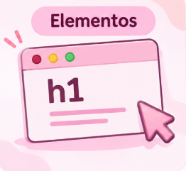
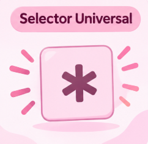

Los estilos en línea aplicaran estilos nuevos sobre otros, aunque ya tengan clases o IDs.
#ID (0, 0, 1, 0, 0)
Los ID tienen mayor peso que las clases y etiquetas.
Pero al ser únicos es preferible usarlos para funcionalidad que para estilos.
.Clases, atributos y pseudo clases (0, 0, 0, 1, 0)
Es mejor usar clases para dar estilos, combinados con una metodología como BEM tendrás una
especificidad manejable.

Elementos (0, 0, 0, 0, 1)
Los estilos aplicados a los elementos son los más básicos y fáciles de reescribir.

Selector Universal (0, 0, 0, 0, 0)
El selector universal no tiene peso alguno y será reescrito por cualquier otra regla.
Ejemplo práctico
En este ejercicio hay dos reglas que afectan al mismo elemento. Aunque la regla de elemento
botón está al final de la cascada, la regla de clase es más especifica y por tanto es la que se
aplicara.
Si nuestra regla incluye varios selectores el puntaje de estos se sumará, dandole mayor
especificidadad.
Algunos consejos
El balance es mantener nuestro CSS lo suficiente específico cómo que se apliquen y tan
general cómo para poder reescribir, o sobre escribir estilos si es necesario.
Tu CSS es tan importante como JS y como HTML.
Comenta y organiza tu código.
Evita selectores demasiado específicos porque dificultan la lectura y cambiar el código si
es necesario.
Usar alguna metodología puede ayudarte a tener mucho más orden, escribir CSS es un proceso.
No existe una forma 100% correcta o incorrecta de hacer las cosas.